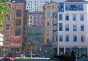
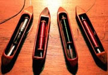
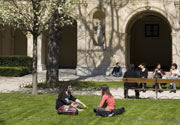

WE PROMO CH180
Lyon
22-23septembre 2018
| |
| Accueil |
| La colline qui prie |
| La colline qui travaille |
| Reportage photo |
| Contact et Programme |
| La colline qui travaille | |
Prenez le métro à crémaillère pour vous rendre sur la deuxième colline de Lyon, la Croix Rousse. Allez admirer le mur des canuts à l’angle du boulevard des Canuts et Denfert Rochereau. L’Italie baroque à Lyon, c’est possible en visitant l’église St Bruno des Chartreux et son splendide baldaquin. Du jardin des Chartreux, très belle vue sur le défilé de Pierre Scize. |
 |
 |
Amusez vous à redescendre à pied à travers les traboules, passages, cours intérieures. Ils retracent à leur manière l’époque industrieuse du travail de la soie à Lyon. Lors du parcours, une visite de la Maison des Canuts s’impose pour voir un métier jacquard en action. Les ateliers de passementerie de Soierie Vivante montrent un autre aspect de ce méticuleux travail de la soie.
|
| Enfin l’Atelier de Soierie, Rue Romarin, explique la technique de peinture sur pannes de velours. Passez par le passage Thiaffait : au Village des Créateurs se trouve la nouvelle génération de designers et créateurs lyonnais. Un vrai petit Soho à la lyonnaise. Ne manquez d'ailleurs pas l'Opéra, qui mêle architecture classique et celle, contemporaine, de Jean Nouvel. Une halte dans le cloître du Musée des Beaux-arts permet de se reposer au calme. |  |